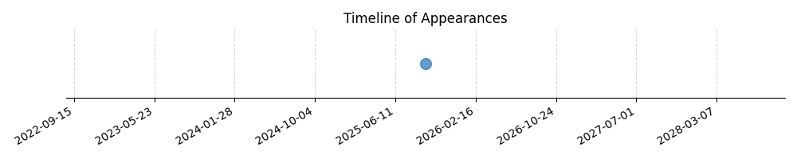

Kategorie: Letecké předpisy
Odpověď C je správná, protože zahrnuje širší spektrum důvodů, proč nesmí být zahájen let, nejen alkohol. Zahrnuje snížení schopnosti pilota nebo člena posádky z jakéhokoli důvodu, včetně omamných látek, léků, únavy, nevolnosti, úrazu nebo nemoci, což je v souladu s obecnými leteckými předpisy týkajícími se způsobilosti posádky k letu.

| Datum výskytu |
|---|
| 2025-09-13 |